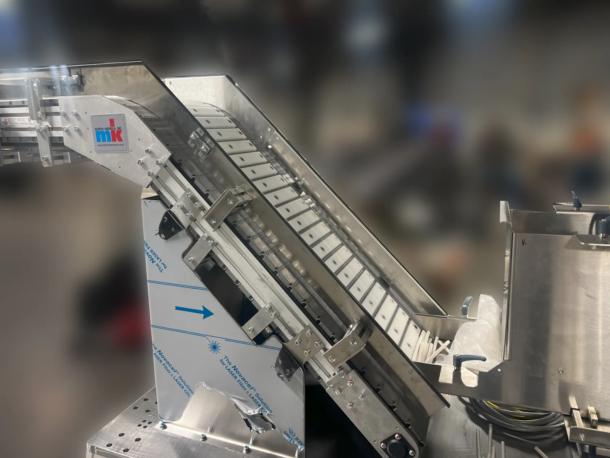

American Feeding Systems
Feed rubber tubes one at a time.
Two sizes of rubber tube needed to move from a hopper up an incline without wedging. MK and American Feeding Systems designed custom cleats that give each tube its own pocket.
- Conveyor
- KFM-P 2040
- Incline
- 45°
- Usable width
- 400 mm

Where the systems meet
American Feeding Systems supplied the supports, chutes and system integration. In the interactive study, inspect the discharge and try a different receiving height for a new example line.